Projects
Nature-based VR for Relaxation
I went looking for a capstone and found one I wanted to do, a nature-based VR relaxation study being run by a lecturer I'd had earlier in my degree. They were vetting students before taking anyone on, so I applied, did the interview, and got the spot because of the previous VR work I'd already done in Unreal Engine.
What I liked about it was the goal: a low-cost VR experience ,built by one person, that could give a bit of nature to people who have none of it, like astronauts, Antarctic crews and people in care homes. This full version was too much for an honours timeline, so I narrowed the study down to international students, who deal with their own kind of isolation, and left the harder settings as the longer-term goal for the research.
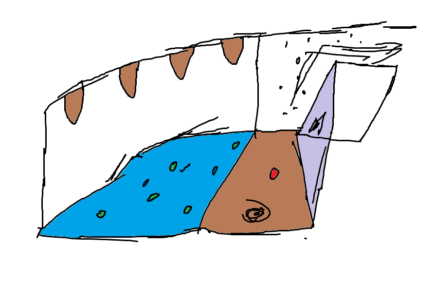
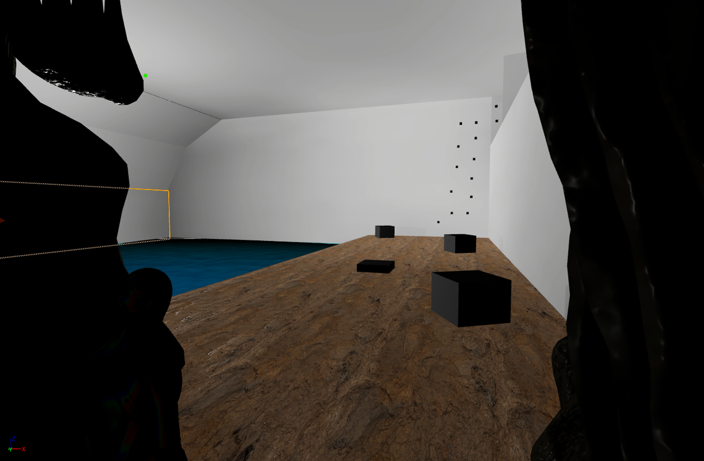
The first stretch was mostly reading, getting across what nature does for stress, which design choices actually change the result, and where the existing VR experiences fall short. That fed into a feasibility study, with early sketches and a small test scene to see if the idea could hold up. The build that came out of it is a two-scene experience in Unreal Engine 5. It starts in a small , closed-in cave, then as the user moves through, opens out into rural Australian bushland.
I chose the animals and plants with feedback from Indigenous knowledge holders at Deakin's NIKERI institute , and kept clear of sacred sites and introduced species, since the experience was meant to feel like real rural Australia. The rest was the slower work: a custom movement system instead of the default teleport, audio I recorded and cleaned up into full 360-degree sound, and comfort features like timed pauses, fade transitions, visible hands to limit motion sickness and a storyline involving ants with custom pathing.
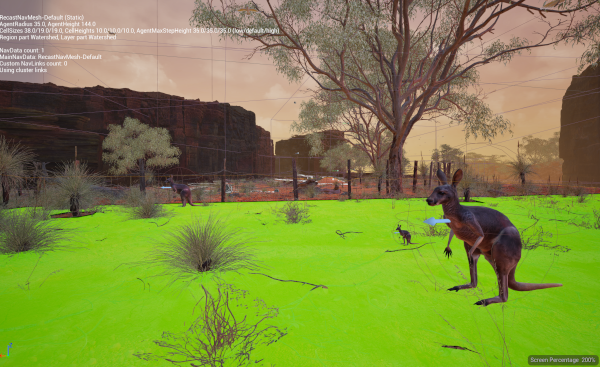
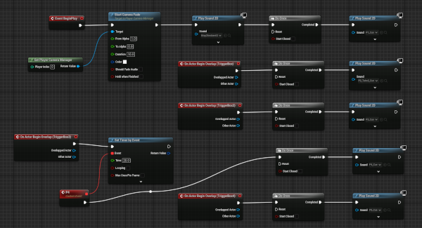
Despite seeming like a issueless development cycle, it was anything but the case. Unreal's water plugin kept throwing shader conflicts in VR, so I gave up on it and rebuilt the water by hand as a custom material on a flat plane. A climbing feature I'd prototyped made early testers feel sick, so it got cut.
Turning the pixel density back up for a sharper image sent the frame rate into single digits, which is what pushed me to split the world into two baked scenes that load separately. Even the ethics side became a hurdle of its own, since the study was flagged high-risk over cybersickness and tripping hazards, and I had to argue it back down to low-risk before I could test anyone.
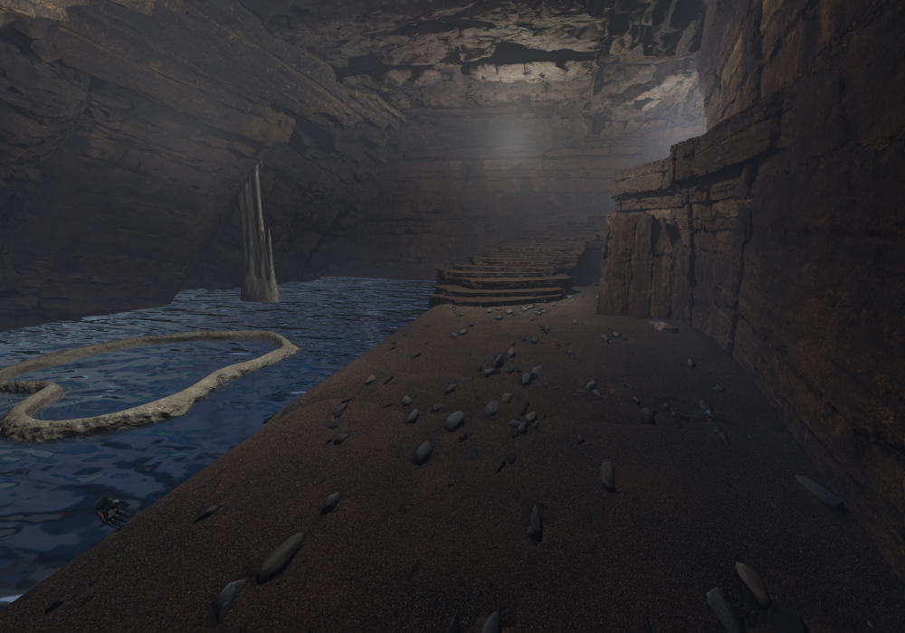
With ethics cleared, I ran 25 international students through the same protocol, with a questionnaire before and after a roughly ten-minute session in the headset and a short interview at the end. The results came out positive, though I'd read them as promising rather than conclusive.
Self-reported stress dropped 37% and anxiety 33%, both past the 20% that counts as clinically meaningful, and presence landed at 71% on the IPQ, inside the acceptable band, with median satisfaction at 8 out of 10. Everyone also finished under the fifteen-minute limit set to keep cybersickness down. Given the small, fairly similar group of students and the lack of a control group, it isn't proof on its own, but it was a good early result.
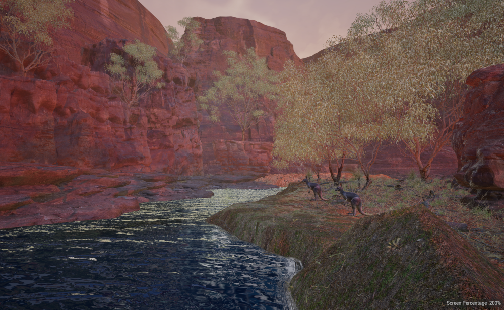
The findings were presented at the 76th International Astronautical Congress in Sydney, though I couldn't be there for it, and were later published, with several of the researchers who'd advised the build among the co-authors. My part wrapped up there, and the data, documentation and evaluation protocol it produced were left for current and future VR researchers to use as they design and improve their own experiences.
Publications enabled by the project
Bridgestone World Solar Challenge 2025
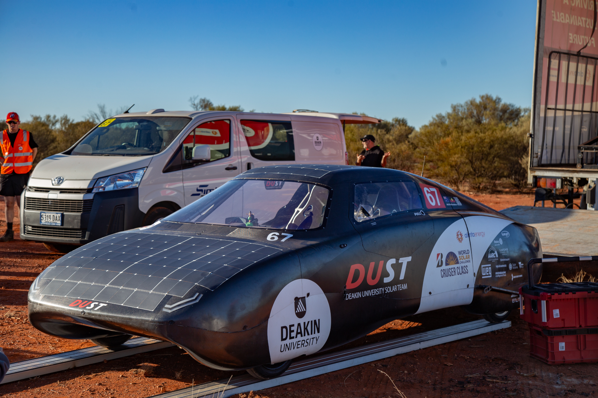
Picture the car in your driveway, the one you actually drive, with solar panels on its roof. The cars you're about to read about run over 600 km on a full charge (link to dust), but an everyday version wouldn't need a battery anywhere near that size, just something closer to a plug-in hybrid's. Since the average Australian drives only about 33 km a day (Link to budget direct), a solar roof could gather that much over a day in the sun, reducing a lifetime of fuel or electricity expenses to a fraction of what they are today.
Bringing that within reach is what teams from around the world chase at the Bridgestone World Solar Challenge, a race across the Australian outback. The cars are split into classes, and the one built around that everyday idea is Cruiser, judged on practicality and energy use as well as outright speed. That is the class we raced in.
The (Re)BuildDeakin's first run at the challenge had been in 2023, under the name ASCEND. I wasn't on that team, though most of my friends were, and I'd turned down a place earlier that year while I was still settling into Australia. The program had been hard enough on everyone that it wasn't clear the university would run it again, so when the School of Engineering greenlit a second entry in mid-2024, the students left over from the first team picked it up, and this time I signed up.
We started a year behind, with about half the usual two-year cycle to work with and the car they'd built in 2023 had tried to do too much at once. It came out heavier and more expensive than it needed to be, and its body had warped under the daily swing from outback heat to overnight cold. Patching it would only carry those problems forward, so we rebuilt from scratch and kept just the parts worth reusing, mostly the more expensive electronics.
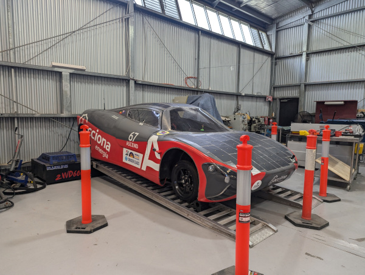
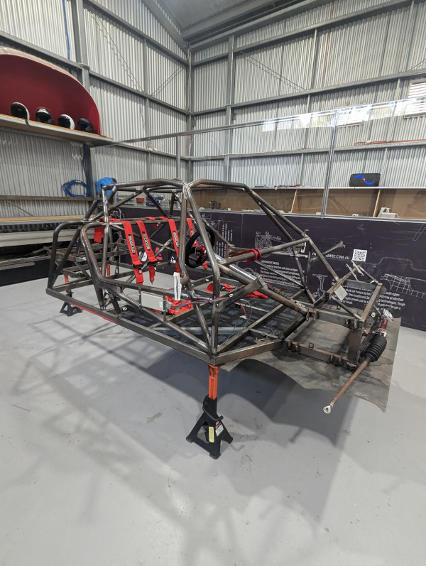
A new set of regulations the year before shaped the rebuild. The race had moved to August, the first time it ran in winter, which meant around 20% less sun, and the Cruiser battery allowance dropped to 15 kWh, so we built our own pack in-house. We moved to Marand in-wheel motors that drive the wheel directly, and pulled the body off the mould in exposed carbon fibre, which brought the car down to around 400 kg. We hadn't had a sponsorship framework before, so I built one and wrote all the content for the prospectus, then handed it to the media students to design.
The team also moved away from the ASCEND name to DUST, signifying our independence from the original sponsor, with new branding to match. I started as team manager, running the admin and the documentation for Bridgestone, but had to step back partway through as my VR capstone was running at the same time and needed more of my attention.
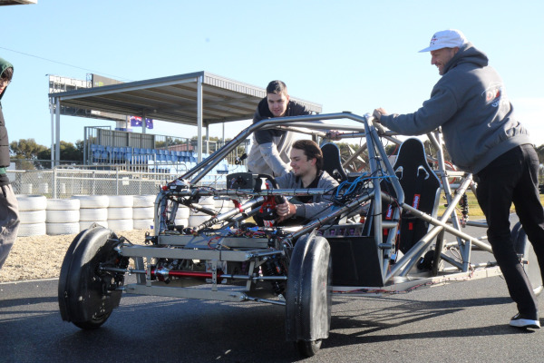
Testing started before the body was on, first at a karting track and then at the AARC proving ground near Anglesea, who later came on as a sponsor. Early on, without the body the car drew an absurd amount of power, but thankfully with the body fitted the power draw came back close to what we'd hoped. I got to drive the car myself one day, before the body went on, and rode in it as a passenger on another, and we put as many students behind the wheel as we could before narrowing it down based on gathered power draw/pedal data, to the six drivers we were allowed to register.
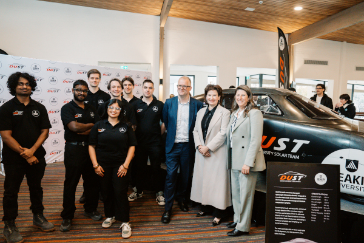
By August the car was on its way to Darwin in our truck, fitted with a ramp and a winch and loaded with swags, marquees, tooling, spares and supplies. When we reached Darwin, we realized it was a whole different ball game, with close to forty teams from around the world all working out of Hidden Valley Raceway (circuit the Supercars use) and it was as chaotic as you'd expect from that many teams in one place, everyone building, filming and borrowing tools off each other at once. With every team leaning on the same few communications networks, mostly Starlink and the local carriers, speeds crawled, and sharing any footage or documents took far longer than it should have.
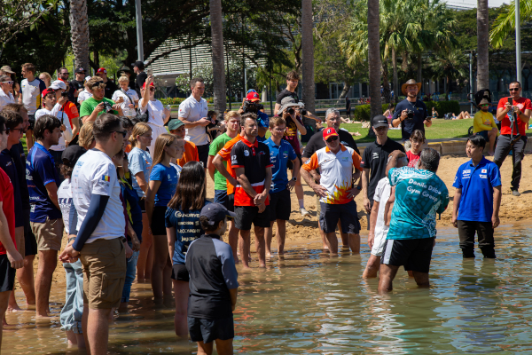
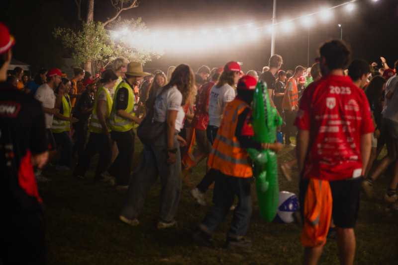
In Darwin we went almost straight into static scrutineering, which turned out to be the harder of the two. It checks the car against its paperwork and the safety rules for public roads, down to an exit test where every driver and passenger has to get out within fifteen seconds and a weight check that adds ballast for anyone under 80 kg, and most of the design decisions had to be justified to the judges
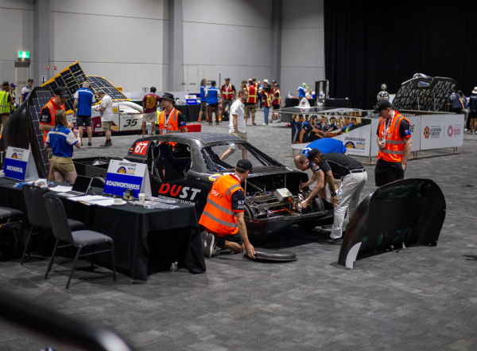
We had a few issues, worked through them over the next few days, and passed. Dynamic scrutineering was more straightforward, the timed hot laps around Hidden Valley that set the starting order. We posted the fastest cruiser lap of the event at 2 minutes 2.85 seconds, a Cruiser Class record for the circuit. We'd done it with the speed limiter still capped at 110 km/h, since no one had remembered to switch it off, so there was almost certainly more in the car than the time showed.
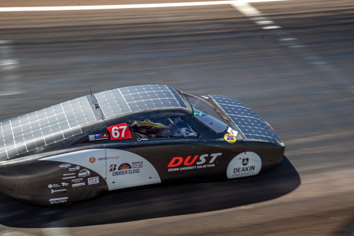
For most of those five days my role was behind the camera. The people who knew the car best handled the solar and motor problems as they came up, and I kept my gear ready for everything else, the driving, the landscape, the team at work.
A puncture meant the whole convoy pulling over at once and emptying onto the roadside, some crouched over the wheel while others stood out in the traffic with flags to keep cars and road trains off us. Nights were at camp, often at grounds with toilets and laundry, where I helped set up and cook, and away from the towns the sky was the best I've seen, with almost nothing to dull the stars.
The final dayThe morning opened with a thirty-minute hold while a storm sat over Adelaide, and once we were moving again the storm came to us, so we ran much of the last day on almost no sun and not much visibility. For a long stretch we were stuck behind a Japanese team we couldn't get past. An overtake is meant to be simple: you radio the car ahead to say you're coming through, and they ease over to let you by. We radioed ahead and got nothing back, tried again, and kept crawling along behind them in the rain with the clock running, while the people in the back of their chase car signalled at us, none of which we could make sense of. It was only after the race that we found out why nothing had got through: their one translator had fallen asleep, so every message we'd sent had been landing on a car where no one could understand a word of it
We made it to the edge of Adelaide and passed a few of the cars we'd been chasing, but Mission Control pulled us over at the 5:45 pm cut-off, 24 km short of the finish line. We spent two more days in the city, trading stories with the other teams, then drove the cars in to the official finish for photographs and left them on display for the public. There was also a thirty-minute time penalty hanging over us from earlier in the race, given for an incident that turned out to be unfounded. It was overturned afterwards, too late to count, though it could have changed where we finished had the call come during the race rather than after it.
The event closed with an awards ceremony that ran through what every team had managed to pull off, which after five days on the same road together felt less like a competition than a room full of people who'd all just done the same hard thing. Then it was the unglamorous end of any big project: pack up, clear the site, and the long drive back to Melbourne, where a short debrief mostly meant cleaning the gear and putting it away. For all the build-up, it finished the way these things usually do, with a car in pieces of equipment to be washed and a team quietly worn out. Looking back there are plenty of things I'd do differently, but for a first rebuild on half the usual time, I'm glad we got as far as we did.